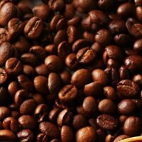
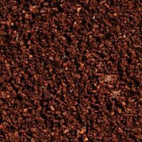
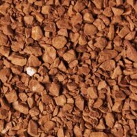
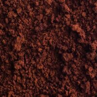

Кава в зернах

Мелена кава

Органічна кава

При покупці 3-х унцій одного сорту чаю чи кави четвертої Ви отримаєте від нас у подарунок! Акція діє з 03 грудня до 07 грудня 2022 р.
Пролетів ще один рік, і знову наближається наш день народження. За цей рік у нас побільшало приводів для радості та святкування. Ми відкрили 6 нових магазинів, ввели чай у пірамідках, щоб вам було не лише смачно, а й зручно. Зараз працюємо над лінійкою кавових капсул від «Унції». Запустили програму «Рік чорного чаю», щоб смачний і якісний чай був у кожній чашці. І цього року вже можна сказати: як завжди, привезли літак самого свіжого чаю, щоб ви могли куштувати різне. При купівлі 3-х унцій одного сорту чаю чи кави четверту Ви отримайте від нас у подарунок! Акція діє з 03 грудня до 07 грудня 2022 р.
ФУНТ чаю. Купуючи пакет 0,5 кг чорного чаю, ми надаємо знижку 40% Знижка діє на 39 сортів класичний чорний чай. Знижка не сумується з жодними іншими знижками та акціями в мережі. Акція діє з 10 по 25 грудня 2022 р.
З 15 по 25 грудня всім нашим клієнтам з накопичувальними картками ми даруємо подарункові сертифікати зі знижкою 15%.
Новорічний розпродаж! Знижка на усі сорти чаю. Акція діє з 10 по 25 грудня 2022 р.
З 15 по 25 грудня всім нашим клієнтам з накопичувальними картками ми даруємо подарункові сертифікати зі знижкою 15%.
Чай і кава - два традиційні напої, які давно увійшли в життя людини. Однак, сьогодні ринок чаю, кави та какао настільки великий, що знайти хороші сорти стає все складніше та складніше.
Поспішаємо Вас порадувати – більше немає необхідності шукати відповідний магазин. На нашому сайті Ви знайдете величезний асортименти від лідерів ринку за унікальними цінами.
У всьому різноманітті продукції Вам допоможе розібратися зручний рубрикатор, за допомогою якого Ви запросто знайдете потрібний Вам сорт, а далі Вам лише необхідно буде покласти товар у кошик і оформити замовлення.
Ми намагаємося вибирати все найкраще та доставляти прямо до Вас. Нас знають тисячі продавців роздрібної торгівлі як надійних постачальників, а наші клієнти дякують нам за співпрацю.
Заходьте до нас на чай або каву, і ми підберемо саме те, що припаде Вам до смаку!